Alternative Android keyboards
I like to use alternative keyboards on my Android devices. By alternative, I don’t mean DVORAK or the swipy keyboards all based on QWERTY computer keyboard layouts. What I mean is a layout completely re-imagined that suits a small screen better. Below is a collage of the different keyboards that I have tried out and still use.
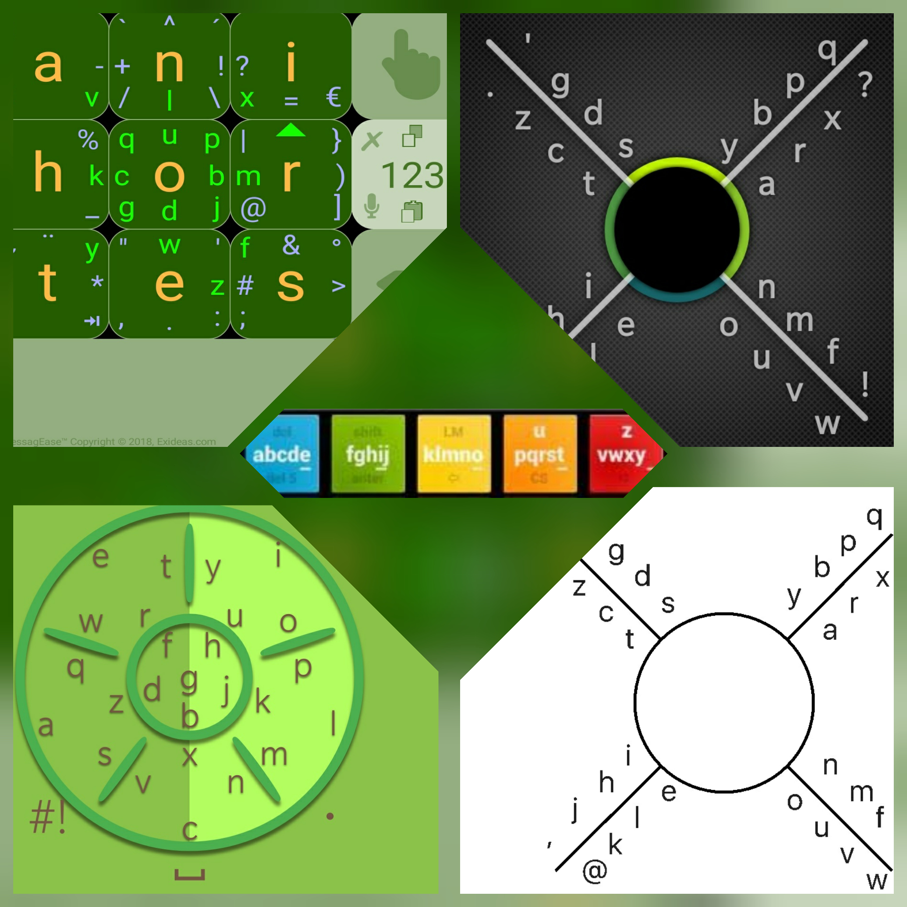
I somehow came across 8pen in 2011 and have never gone back to a standard layout keyboard on an Android device. Over the years, I kept searching for even more alternative keyboards, and have come across five in total. I switch between most of the keyboards, and I am listing them below in the order of most usage. I also always turn off word prediction on any keyboard I use as I have just never found it useful.
MessagEase
This is the keyboard that I use the most. I like how it has many symbols that can be accessed immediately on the keyboard. I enable the setting to always display these symbols so that I can quickly access them when required.
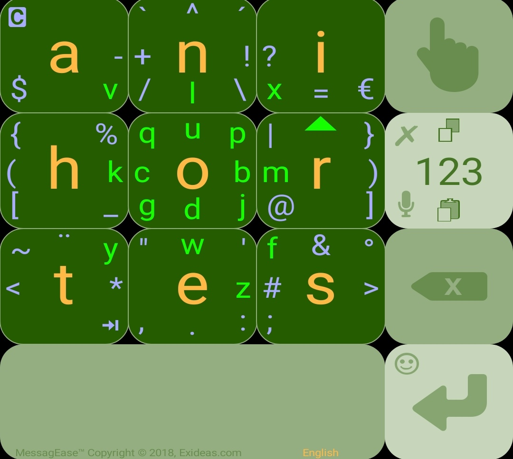
Below is a video tutorial on how to use the keyboard, but I will try for a quick written description. Pressing a square will yield the large letter in the centre of the square. There are letters and symbols around the inside perimeter of the squares. To type one of these, move your finger from the centre of the square in which that letter or symbol is in, then slide your finger in the direction of that letter (you do not have to cross the border of the square but it does not matter if you do).
The numeric pad is intuitively accessed by pressing the square with “123”, which brings up a simple interface to use.
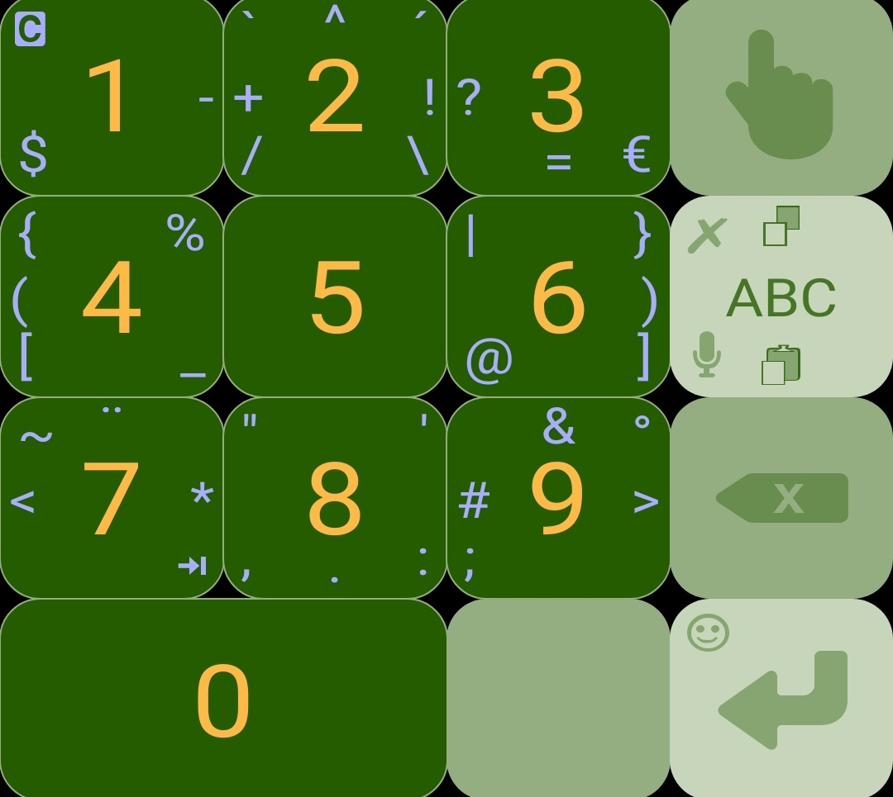
There are many settings and customisations available for this keyboard as can be seen in the screenshot below.
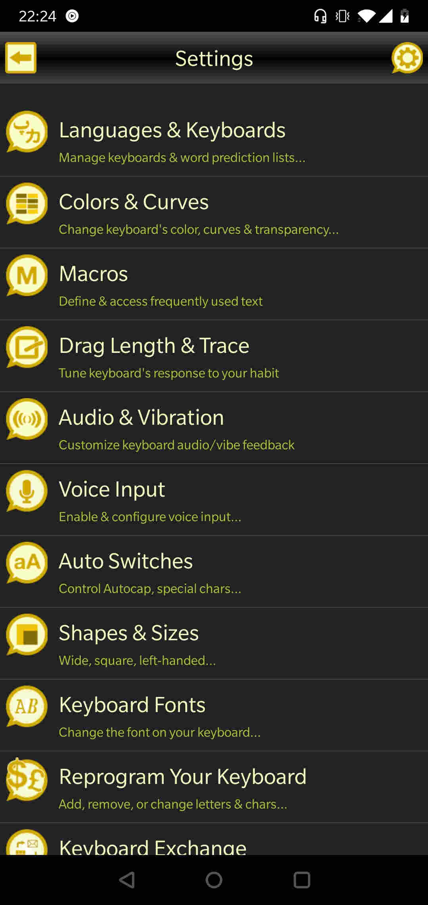
8pen
This was the first alternative keyboard that I used, and I first used the beta version. When it was finally released, they had changed the letter layout, and I had to relearn how to use it. But I liked it so much that having to relearn did not stop me from buying the keyboard and then using it exclusively for many years.
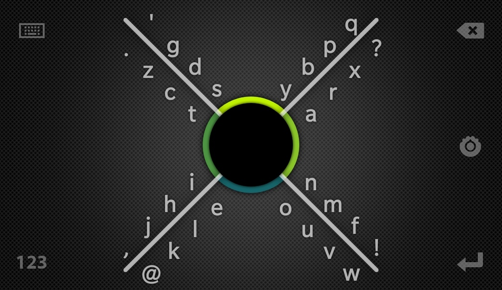
To use this keyboad, press your finger inside the circle. Then move your finger out to the quadrant where the letter you want is. Keeping your finger on the screen, then rotate either clockwise or anti-clockwise depending on which spoke the letter is, then rotate around the number of quadrants that matches it’s position on the spoke going outwards, before returning to the centre. So for example, to type the letter “a”, starting from the centre, move to the right quadrant, rotate anti-clockwise by one quadrant, bring it back to the centre. “r” would be the same, but rotating two quadrants. Releasing your finger will then put a space. So, to write a word, you continuously rotate without lifting your finger off the screen.
The below video is an official video from 2010 which is the beta version with the old letter layout.
The numeric keyboard is intuitively accessed by pressing the “123” in the bottom left. This brings up a simple number pad that also has symbols.
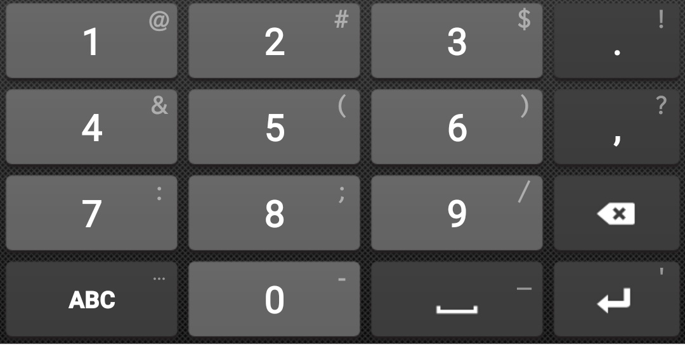
There are many settings and customisations available for this keyboard as can be seen in the screenshot below.
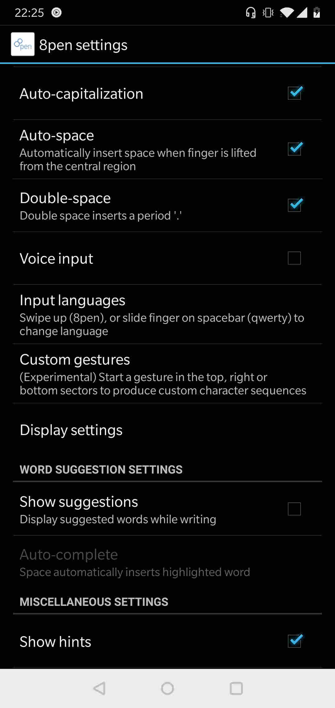
NovaKey
NovaKey developer twitter account.
The feature that puts this keyboard head and shoulders above all the rest is the awesome delete function. What lets it down, is a bug where the space bar very frequently just does not work, making this keyboard unusable as adding spaces is very important, otherwisethishappensanditisnotverygood. If this bug was fixed, this would definitely be my number 1 keyboard. When I need to delete, I switch to this keyboard just for the delete function that I will describe further below.
This keyboard works similarly to MessagEase, where to type a letter, you start in a segment, then move in the direction of the letter you want, but then you have to cross the line. For the centre segment, the central letter “g” is obtained by tapping the centre. The tap letters on the outer segments are the outermost central letters.
Now, onto the the amazing deletion function. To delete a single character, move your finger right to left crossing the centre circle. The amazing part comes if you cross the centre, but instead of lifting off your finger, you start rotating around the circle anti-clockwise. Using this rotation, you can keep backspacing as far as you want. The fun doesn’t stop there. If you have deleted too much, then, keeping your finger on the screen, start rotating clockwise to bring back characters.
The numeric keyboard is intuitively accessed by pressing the “#!” in the bottom left. This brings up a simple number pad that also has symbols. However, the numbers and symbols are arranged in the same rotary layout that makes it more difficult than a number pad.
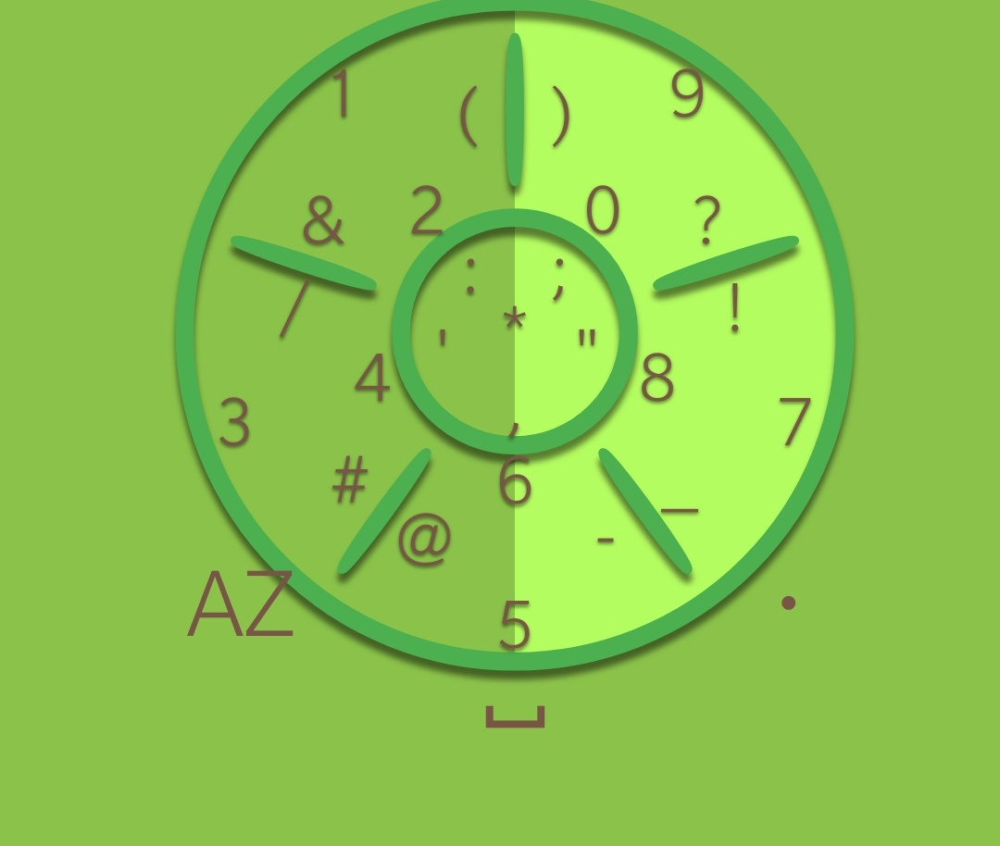
There are many settings and customisations available for this keyboard as can be seen in the screenshot below.
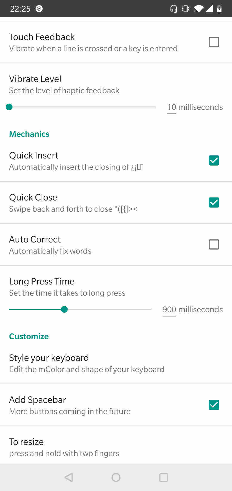
vi8
I stumbled across this keyboard when I could no longer find 8pen on the Google Playstore when I upgraded to a new phone one time (though I have created a .apk file that I can use to re-install 8pen - hey, I paid for it so I should be able to still use it). The creator of vi8 also paid for and could no longer find 8pen, so, he decided to write vi8 based on 8pen. As can be seen in the screenshot below, it is essentially the same as 8pen.
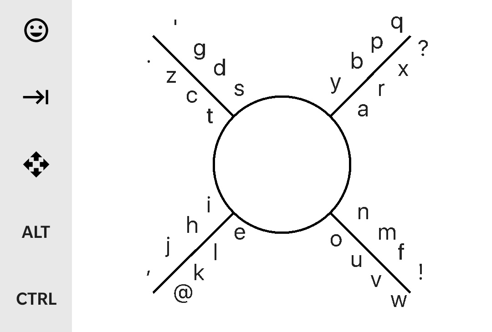
The numeric keypad is not intuitively accessed by long pressing in the left quadrant. This then brings up a simple to use keypad.
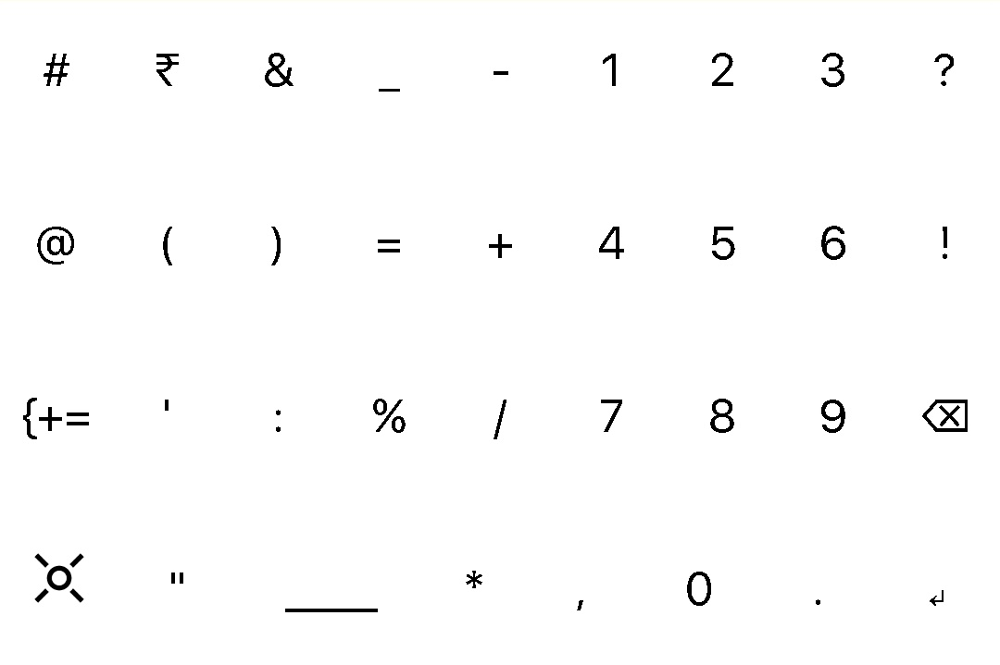
The creator of this keyboard is a user of VIM, but it is a difficult text editor to use on a phone. So, there is an extra screen that can be accessed by pressing the icon of the 4 directional arrows. This brings up a key pad with navigation buttons as well as common action buttons.
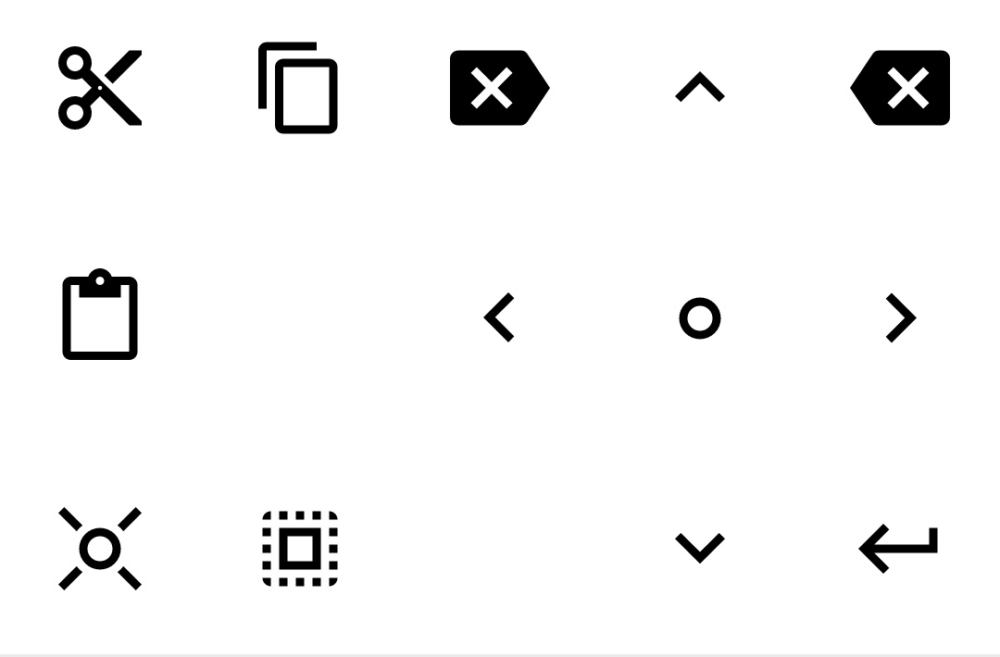
5-tiles
I tried this keyboard, but didn’t get into it. Now, it is no longer available on the Google Playstore.
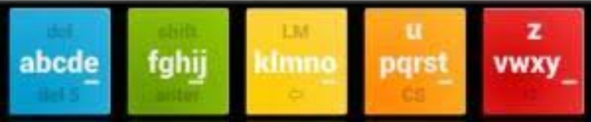
As given away by the name, there are 5 tiles. The concept is to start with your finger in a tile, and then move left and right to get the letter you want. Below is a rather long demo from the creator.